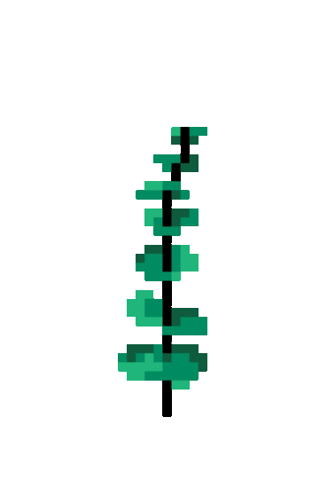

About this project
The Catland Snapchat Lens is created as a project for the New Media and Emerging Practice course. The core objective behind my work is to explore new media’s power in creating a digital environment with therapeutic potentials. I especially wanted to combine relaxing experiences with social media - the latter is often considered be fast-paced and consuming, but it does not have to be that way. To start with, for example, how can we encourage the users to take a break from the non-stopping flow of social media feeds?
The Snapchat Lens is a function provided by Snapchat and it is based on novel technologies such as 3D modeling and Augmented Reality. Currently, users mostly utilize it for selfie effects. The Catland Lens, suggests an alternative by encouraging more physical movements and interactions with the surroundings.
The AR effects adds a fantastical layer to everyday locations. The users can turn to different angles to see different elements. Additionally, the users have the option to enable a “paint brush”, which is a colorful thread that follows the phone’s trace in the 3D environment.
Graphic elements
Production
- Graphic creation - Adobe Illustrator + Adobe Premiere
- 3d modeling - Lens Studio
- JavaScript
- Compiled and published through Snapchat Lens Studio
Demonstration